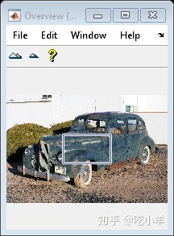
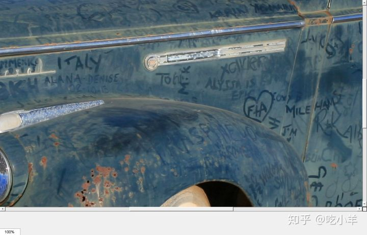

Home
此示例显示了如何使用模块化工具构建应用程序，该工具可通过导航工具（包括滚动条，总览窗口和放大框）显示图像。
首先，定义一个构建应用程序的函数。本示例定义函数my_large_image_display，在本示例末尾 。
在定义了构建应用程序的函数之后，请测试该应用程序。将图像读入工作区。
I = imread('car1.jpg');
在应用程序中显示带有导航帮助的图像。
my_large_image_display(I)


应用创建函数
my_large_image_display函数接受图像作为参数，并在带有滚动条，概述工具和放大框的图形窗口中显示图像。请注意，该函数会抑制图形窗口中的工具栏和菜单栏，因为可滚动导航与标准的MATLAB™图形窗口导航工具不兼容。
function my_large_image_display(im)
% Create a figure without toolbar and menubar
hfig = figure('Toolbar','none', ...
'Menubar','none', ...
'Name','My Large Image Display Tool', ...
'NumberTitle','off', ...
'IntegerHandle','off');
% Display the image in a figure with imshow
himage = imshow(im);
% Add the scroll panel
hpanel = imscrollpanel(hfig,himage);
% Position the scroll panel to accommodate the other tools
set(hpanel,'Units','normalized','Position',[0 .1 1 .9]);
% Add the magnification box
hMagBox = immagbox(hfig,himage);
% Position the magnification box
pos = get(hMagBox,'Position');
set(hMagBox,'Position',[0 0 pos(3) pos(4)]);
% Add the Overview tool
hovervw = imoverview(himage);
end
======================================================================
我的测试结果及程序
下面是我测试的代码：

注：本文根据MATLAB官网内容修改而成。